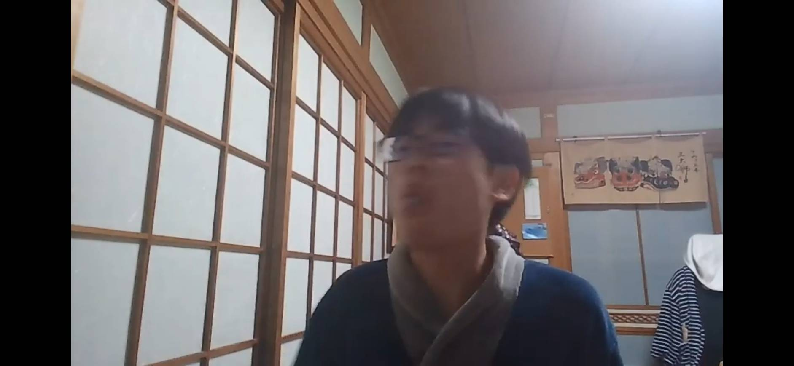
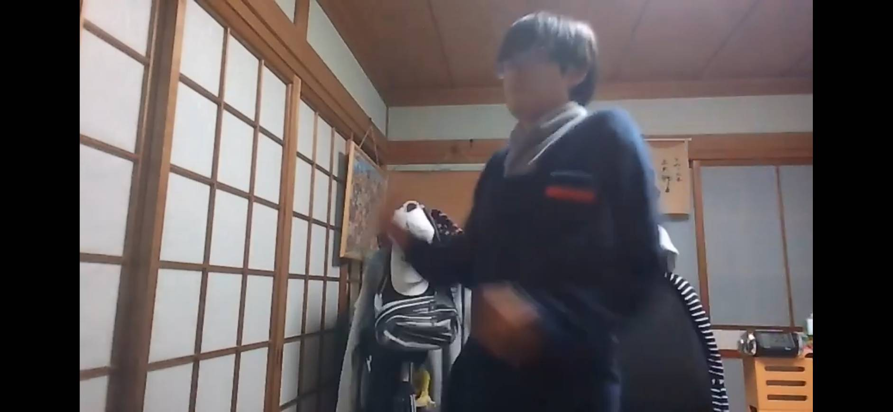

こんにちは、さつまいもと申します。
もくじ
さつまいもワールドの動画には様々なシリーズがあります
消しゴム食べてみた

この動画をおすすめする理由はサムネの躍動感が素晴らしいからです。内容はたいしたことないです
激きもマジシャンめちゃくちゃ自信作です。しかしあまりにも再生数が少ないです
商品紹介中に敵兵にばれるHIKAKINHIKAKINのものまねが絶妙に下手なのがおすすめポイントです
焦っているときのウッディの走り方

おもちゃをアンディーが捨ててしまう事を知ったときのウッディです(トイストーリー３）
大事な所でOPに入る古畑任三郎(なぞかけ編）古畑任三郎の独特な間を表現するのが難しかったです
ビブリボンのチュートリアル絶対に誰も知らないだろうと思いましたが、TIKTOKなどでゲームがバズり、再生数が伸びました